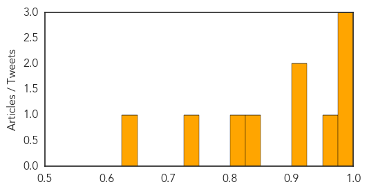

Cholera
30-Day Web Trend
5 alerts, 0 warnings

30-Day Twitter Trend
3 alerts, 0 warnings
Article Locations
Article Confidences
Top Articles:
- 0.993
- Politico SL News Fear the worse this rainy season
- 0.993
- Officials assess readiness of hospitals for cholera
- 0.978
- Five cholera cases recorded in Accra
- 0.967
- Ghana hit by new cholera cases -
- 0.923
- Cholera strikes 3,000 Burundi refugees in Tanzania
- 0.901
- Powerful Legal Coalition Says Haitians Should Be Able to Sue UN for Cholera Outbreak
- 0.825
- Flood blues: Cholera case confirmed in Adabraka
- 0.812
- Nigeria: Epidemic (Cholera) Emergency Plan of Action operation update n° 1 (MDRNG020) - Nigeria
- 0.749
- Beachgoers Beware! Carnivorous and fatal Vibrio bacteria scours the Florida beaches
- 0.636
- 3 die in Bunkrugu floods; many displaced
Top Tweets:
-
No tweets found for Jun 12, 2015
Ebola
30-Day Web Trend
0 alerts, 0 warnings

30-Day Twitter Trend
0 alerts, 0 warnings

Article Locations

Article Confidences

Top Articles:
- 1.000
- Rise in new cases shows Ebola has not released its deadly grip
- 1.000
- Ebola outbreak: Timeline of outbreak in West Africa
- 1.000
- Ebola Resurgent: African States Report Alarming Rise in Cases
- 1.000
- Dozens of new Ebola cases reported in Sierra Leone and Guinea
- 0.999
- donga.com[English donga]
- 0.998
- Sierra Leone leader imposes curfew in bid to halt Ebola
- 0.997
- OraSure Technologies : rapid Ebola test in line for up to $10.4 million in federal funding
- 0.997
- Sierra Leone announces new measures to halt Ebola
- 0.997
- National Geographic Magazine
- 0.996
- Liberia still cautious after Ebola-free declaration
- 0.996
- Sierra Leone announces new curfew to halt Ebola
- 0.996
- 5 things to know for your New Day -- Friday, June 12
- 0.995
- Awards for 'exceptional' Ebola work
- 0.995
- CDC warns U.S. doctors: Be on the lookout for MERS
- 0.994
- New Entry Screening and Monitoring Guidelines for Travelers Entering the United States from Liberia
- 0.993
- Ebola instant test: HHS signs $1.8M contract with Pennsylvania company
- 0.993
- Africa – what’s the score?
- 0.993
- Politico SL News SMART wins international award
- 0.990
- Quick, cheap, easy help in stopping disease
- 0.990
- Ebola nurse Will Pooley gets MBE honour
- 0.989
- A Chinese Ebola Drug Raises Hopes, and Rancor
- 0.988
- Phase 3 Ebola Vaccines Clinical Study Conference Opens in Conakry
- 0.985
- Virginia Hospital Center's Ebola Relief container arrives in (...)
- 0.985
- Ebola Scan for Jun 12, 2015
- 0.984
- MERS quarantine ends for 75 under observation
- 0.983
- Silicon Valley firm warns against travel to S. Korea
- 0.980
- Ebola drug made in China fuels hope — and controversy
- 0.980
- The most from the coast
- 0.979
- Sierra Leonean and Guinean leaders visit border to reinvigorate Ebola response
- 0.975
- Stigmatised: The Ebola heroes no one will hire
- 0.974
- Helen Shirley-Quirk named in Queen's Birthday Honours for battle against epidemics
- 0.969
- ACT Alliance Appeal: Post-Ebola Recovery Program in Liberia – LBR151 - Liberia
- 0.967
- Ghana suspends Ebola vaccine trial, claims citizens used as guinea pig
- 0.966
- Los Angeles Prepares for MERS With a Laid-Back Stance
- 0.951
- Doctor who fought Ebola inspires Academy of Notre Dame grads
- 0.951
- Seoul a ghost town as South Korea grapples with Mers fear
- 0.950
- Tour Operators Seeing Few MERS-Related Cancellations
- 0.944
- Suffolk Ebola survivor Will Pooley awarded an MBE
- 0.926
- Santa Fe company part of push for Ebola vaccine
- 0.902
- British people involved in fight against Ebola in Africa to get medal
- 0.898
- Ellen applauds G7 Summit’s success
- 0.898
- Gov't was warned against Ebola vaccine trial
- 0.892
- Ebola Trial Not A Referendum
- 0.886
- Politico SL News Interview: Ending Ebola will be painful – MSF
- 0.859
- SABIN briefs Parliament on Immunization Financing « Awoko Newspaper
- 0.842
- WHO Resident Representative in Sierra Leone Visits the China-aided Fixed Bio-Safety Laboratory and Ebola Holding and Treatment Center
- 0.819
- Unification minister to visit inter-Korean border checkpoint on MERS woes
- 0.819
- Unification minister to visit inter-Korean border checkpoint on MERS woes
- 0.759
- Scientifically, Ebola Clinical Trial Is Not Wrong, But... - Fmr FDA Boss
- 0.743
- Brigade completes Ebola mission in Liberia
Showing top 50 articles...
Top Tweets:
- 0.904
- The real killer in the Ebola epidemic - PBS NewsHour (blog) http://t.co/ySwgbKWEcA ebola EVD
- 0.877
- RT: New: The Case for Improved Diagnostic Tools to Control Ebola Virus Disease in West Africa and How to Ge ... http:…
- 0.875
- Quick, cheap way to help stop deadly Ebola - CNBC http://t.co/Z0RvzTwBBG ebola EVD
- 0.866
- Ebola Update: 27,251 confirmed, probable & suspected cases reported in 3 most affected countries, with 11,163 deaths. EbolaResponse
- 0.859
- The Case for Improved Diagnosti Tools to Control Ebola Virus Disease in West Africa and How to Get There http://t.co/em2EHNxpBj
- 0.853
- Ebola instant test: HHS signs $1.8M contract with Pennsylvania company - Washington Times http://t.co/RbLaclIuHC ebola EVD
- 0.851
- RT: Ebola spikes again in W. Africa according to. Ebola anywhere is Ebola everywhere http://t.co/Y169OmEPoo http://t.co/v…
- 0.829
- Ebola: WHO Reports Spike in Cases in Guinea and Sierra Leone http://t.co/VUnLVCZOY8
- 0.803
- BREAKING: Sierra Leone imposes curfew after a new spike Ebola cases. The outbreak isn't over, need is great to end it http://t.co/l8B6ALNeA9
- 0.792
- Ebola diaries: Rapid response contains Nigeria's outbreak http://t.co/piBKlidgS2
- 0.790
- Using SMS data to monitor exposure to Ebola outbreak & estimate its impact on health behaviour in Liberia http://t.co/GwdhRbnZXu
- 0.785
- A Chinese Ebola Drug Raises Hopes, and Rancor - New York Times http://t.co/rY8yRVbAHM ebola EVD
- 0.785
- A Chinese Ebola Drug Raises Hopes, and Rancor - New York Times http://t.co/gwnS0sUZjb ebola EVD
- 0.785
- A Chinese Ebola Drug Raises Hopes, and Rancor - New York Times http://t.co/Bmf4zflxqG ebola EVD
- 0.785
- A Chinese Ebola Drug Raises Hopes, and Rancor - New York Times http://t.co/AFDwdI5bLt ebola EVD
- 0.755
- Santa Fe company part of push for Ebola vaccine - Albuquerque Journal http://t.co/ABLzGcm8rH ebola EVD
- 0.748
- Lehigh Valley Company Wins $10 Million Contract for Ebola Testing - NBC 10 Philadelphia http://t.co/2pdYzLQzEx ebola EVD
- 0.743
- RT: Kudos! RT: In Sierra Leone, graduating under Ebola http://t.co/v0K9V3VGeP Ebola http://t.co/Vf4BbHLAoM
- 0.742
- Chinese Ebola Drug Brings American Objections - New York Times http://t.co/85SUI86s1q ebola EVD
- 0.734
- Decline in Ebola cases stalls in West Africa https://t.co/IVR6zcEnff EbolaResponse http://t.co/7doUeE8FqX
- 0.662
- 12 June news overview on avianflu avianinfluenza Ebola EbolaResponse MERS http://t.co/kNWtQR14yc
- 0.654
- .@USAID investigates how behavior change is helping to stop the spread of Ebola in West Africa http://t.co/vwWa9KuiKN
- 0.628
- Just In: Feds tap MGH as one of 9 Ebola treatment centers in US - Boston Herald http://t.co/R5oWnDNFry ebola EVD
- 0.613
- RT: good news for guineabissau: source says number of ebola contacts in the guinea border area has halved to 119 from a wee…
- 0.605
- Favipiravir—a prophylactic treatment for Ebola contacts? @thelancet http://t.co/A7E0R1PSOB
- 0.588
- Bethlehem's Orasure gets government contract to develop quick Ebola test - http://t.co/CnLaQrobTb http://t.co/cX0n9HXxUJ ebola EVD
- 0.570
- 5 Lessons in Crisis Communications from the Ebola Response lessonslearned http://t.co/0T3Qx3W6UQ
- 0.559
- RT: 2 interesting letters this week: MERS in Asia http://t.co/Z0OiPs96qq & favipiravir for Ebola prophylaxis ht…